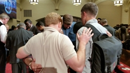

NY CityServe Movement
Unites NYC's Youngblood Preachers,
Old Guards in 'Historic' Partnership
Hundreds of NYC-area nonprofit and church leaders — young and old, red and yellow, black and white—are mobilizing as one body for the very first time in an effort to be the hands and feet of Jesus Christ in one of the world's most unique urban centers, thanks to an initiative organized by the Luis Palau Association.
New York City has seen a surge in the past decade or more of contemporary, Millennial - and usually white male-led churches, who stand in contrast, in some ways, to the old guards who put down spiritual roots in the big city decades ago.
Among the veteran leaders are people like Jim Cymbala (Brooklyn Tabernacle) and African-American pastors and civic leaders A.R. Bernard (Christian Cultural Center) and Floyd Flake (Greater Allen A.M.E. Cathedral), whose combined congregations number more than 60,000 New Yorkers.
Add to the mix the thousands at Timothy Keller's Redeemer Presbyterian Church, Carter Conlon's Times Square Church and James Nam Soo Kim's Promise Church, and the number swells even more. There are also a myriad of mostly-ethnic storefront churches that dot nearly every block in culturally-rich enclaves across the city's five boroughs.
"NYC is the melting pot, so it only makes sense for the churches to come together along with the nonprofits," the Rev. Jordan Durso of Christ Tabernacle in the borough of Queens told The Christian Post. Durso, outreach pastor at his parents' church, is also executive director of the non-profit Legacy Center.
Durso believes the Luis Palau Association's CityServe initiative, ongoing in several cities since taking off 8 years ago in mostly liberal and secular Portland, Oregon, should be a model for the entire world.
"I'm excited about the Luis Palau Association coming together, helping us get together, meet other people, other organizations, and get involved with churches... I think that the ripple effect is going to be enormous and people are gonna get helped physically, mentally and of course spiritually, so I'm really excited," he added.
Kevin Palau, the main brain and momentum behind CityServe, knows there is plenty to be excited about.
His support, like that of leaders in cities like Portland, Houston, San Diego, and others, was won by the CityServe commitment to partner with local governments to simply work to combat homelessness, gang violence, and human trafficking, or to partner with local schools and get involved in foster care systems. There are absolutely no strings attached, explained Palau, who also emphasized that Gospel proclamation would occur separately from service at a later time in an event called CityFest.
"When they see that, we're willing to go serve in schools when you can't preach in schools. That we're willing to serve and makeover family homeless shelters when that may not be the place to share the Good News," Palau said of unconditional acts of love being the key to opening people's hearts. "We have to, I think, earn the right to be heard. We absolutely will share the Good News, I don't want anyone to be confused about that." The purpose of CityServe-CityFest has always been "the one-two punch of serving with no strings attached and then joyfully celebrating" what churches are accomplishing together.
Palau added, "I think we've turned the corner. I think that leaders like A.R. Bernard, Floyd Flake, Jim Cymbala and Tim Keller and others have become convinced this is maybe a kairos moment, an opportune time to unite the Body — both to serve and to share the Good News for such a time as this."
Old School Evangelist Pays Homage to His Younger Peers
New York CityServe's youth aspect was also a point of interest at Tuesday's launch, especially for Argentina-born evangelist Luis Palau, who was the biggest pull for Latino involvement in CityServe.
The elder Palau, with his trademark humor and personable approach, poked fun at his young peers and their contemporary ministry style, at one point saying that, "To them a hymn book is a wall where they project all this stuff."
But in the midst of his humor, Palau expressed admiration for emerging church leaders, though he noted that the label (in relation to the liberal Emerging Church) initially gave the traditional and old school evangelist pause.
"When the emerging church idea came up— thankfully the premise disappeared. Those kinds of labels are dangerous. But when it came up, me being a defender of the faith, I got really nervous [and thought] 'All these boys are gonna mess it up, you know.' And they come on the platform with broken jeans that seem to be unwashed and they don't (comb) their hair properly and it seems like they haven't washed their hair for two weeks. And here they are, that's supposed to be the new trend you know. But when you listen to what they say, they preach the Gospel even better than some of the old timers like me."
The 79-year-old evangelist added, "I've been to some of these conferences like the Q (Conference) and Catalyst. [There are] about 5,000 or 6,000 young pastors, and I'm the old [one] in the crowd … You listen to these young preachers, they really preach the Word with an authority and a power that I think the middle generation, between me and the young ones, we haven't done it as much. I don't think we should despair. I think we should get excited about the young generation of preachers coming behind us, who dress different from us."
Eliciting hardy laughs, Palau continued, pointing to his attire: "This is the way Saint Paul used to dress, in a suit and a tie. …Who sanctified jeans? Who said jeans were the new robes of the church?"
But he pressed the hundreds gathered, representing more than 1,200 local CityServe churches, to take note of Millennials in ministry.
"If you can look beyond the dress, beyond the hair, beyond the beards, beyond the torn jeans, and badly-shaped shoes and all that... there is (power) in the young generation… Some of you, I'm not too sure that you believe that, but I do and I'm a stickler for doctrine."
Kevin Palau, in his interview with CP the day prior to NY CityServe's launch, explained the attraction for some of hipster-oriented Christian leaders to the service initiative.
"I'd say the younger church planters that I can relate to — because Portland has a lot of those kinda, the guys that are tattooed and pierced, the hipster kinda churches that fit in, thank the Lord, with Williamsburg folks. They love it, because they want to see cultural engagement," he said. "They want to see an ability for people that have been burned by the church or have all these negative stereotypes to say, 'These churches seem to have relationships across cultural lines.' That speaks to political correctness today, and who other than the church can do that, ideally. And it speaks to unconditional love, [which] is always a key to opening people's hearts."
The Rev. Que English, who leads Bronx Christian Fellowship Church with husband Tim English, is founder of the NYC Clergy Roundtable. English is also one of the dozens of local church leaders serving on the NY CityServe advisory board. English, who leads the social justice initiative for NY CityServe, told CP Tuesday that although the method might be packaged in ways the older generation are not used to, God's message was still being delivered.
The sanctuary at Calvary Baptist Church was completely filled, with some people even watching a live video feed from the downstairs fellowship hall. The key words for the day were excitement and vision. The launch began with a time of worship led by Eric Marshall from Trinity Grace Church, Kevin Palau laid out the vision and next steps of NY CityServe & CityFest, and several NYC leaders, including Rev. A.R. Bernard, Bishop Hector Bonano, and Rev. Que English, shared the importance of seizing this unique moment as we all move forward together.
NY CityServe will mobilize believers to bring justice to broken systems and communities. Churches will partner with organizations and community agencies who are devoted to ending human trafficking in New York City, providing significant growth in volunteerism and awareness. The faith community will come alongside youth programs that work with the juvenile justice system to care for the city’s most vulnerable children. Believers from across New York City will come together to bring work for justice that actively addresses the needs of the poor and oppressed.
Faith communities around the city will be mobilized to serve foster children, through working with foster care organizations and encouraging greater involvement from believers in the foster care system. Additionally, churches will collaborate with city and community agencies to serve New York City’s homeless population by facilitating free health care resources and solutions for those living in poverty. Throughout New York City, believers will work together to bring hope to those without hope.
NY CityServe's Education focus celebrates and accelerates community and school partnerships providing arts programs, life skills, college pathways, mentoring, and more—celebrating the 75-plus partnerships that already exist, and accelerating momentum and impact through doubling that number by the summer of 2015 and multiplying thereafter. We embrace the long-range goal of at least 10% of New York City's 7100 churches partnering with public schools to equip students to achieve their God-given potential. We will support that goal as a vehicle for awareness, volunteerism, and deepening rela- tionships among school administrators and educators, community members, pastors, ministry leaders, students, and families.
NY CityServe is rooted in the Biblical values of justice, mercy, humility, unity and love, to be practiced through collaborative projects celebrating the diversity of God's movement in New York City, in order to seek the peace of the city for the glory of God. NY CityServe is impelled by the Gospel, connected to churches, focused on neighborhoods, driven by relationships, and committed to diversity.
Movement Objectives
Develop a long-term, sustainable effort to accelerate the impact of the Church in the areas of justice, mercy, and education.
Increase collaboration among churches, non-profits, businesses, and the public sector to address the core issues of the city through increased service.
Mobilize thousands of church-connected volunteers to serve in the neighborhoods of NYC through unified initiatives.
Accelerate and celebrate the impact of these church-connected collaborations by sharing their stories on a widespread scale.
Support and partner with NY CityFest leadership for a free multicultural festival (summer 2015) to celebrate the work that has been accomplished and inspire greater church connected impact through our city.
NY CityServe & CityFest Executive Committee
Rev. A.R. Bernard | Christian Cultural Center
Bishop Hector Bonano | CONLICO
Hector Chiesa | Church of God of Third Avenue
Bob Doll | Nuveen Asset Management
Jennifer Jones Austin | Federation of Protestant Welfare Agencies
Kittim Silva Bermudez | Pentecostal Church of Jesus Christ of Queens
Bishop Nam Soo Kim | Promise Church
Manuel Alvarez | Assemblies of God
Adam Durso | Christ Tabernacle
Robert Guerrero | Redeemer City to City
Cesar Perez | The Church of God Pentecostal Movement
Mac Pier | New York City Leadership Center
Victor Rios | Southern Baptist Churches
Rev. Gabriel Salguero | National Latino Evangelical Coalition
Johanna Sheridan | Grace and Mercy Foundation
Althea Taylor | Bronx Bethany Church of the Nazarene
NY CityServe Leadership Team
Enid Almanazar | American Bible Society
Ruben Austria | Community Connections for Youth
David Beidel | Urban Hope NYC
James Betts | Salvation Army
Michael Carrion | Promised Land Covenant Church
Elise Chong | Hope For NY
Larry Christensen | CRU
Edwin Colon | Recovery House of Worship
Paul Coty | Young Life
Jeremy Del Rio | 20/20 Vision for Schools
Eric Diaz | Empire Mentoring
Nicky Edness | The Greater Allen AME Cathedral of NY
Que English | New York City Clergy Roundtable
Rev. Joel Gibson | Federation of Protestant Welfare Agencies
Vivian Grubb | Christian Association of Youth Mentoring
Robert Guerrero | Redeemer City to City
Donnell Harper | New Covenant Temple
Greg Jao | InterVarsity
David Kim | CMDA Greater NYC
Glen Kleinknecht | CRU
Diana Mao | Nomi Network
Craig Mayes | NY Rescue Mission
Peter Ong | Living Faith Community Church
Rich Rivera | Restoration Church
Al Taylor | Infinity Mennonite Church
Althea Taylor | Bronx Bethany Church of the Nazarene
Mitchell Torres | Harvest Fields Community Church
Redd Sevilla | New Life Fellowship Church
Dan Stoltzfus | The Bowery Mission
David Turk | Nyack College & Alliance Theological Seminary
Guy Wasko | Trinity Grace Church - East Village
Shandra Woworuntu | Voices of Hope
Reprinted from Christian post.com and Luis Palau Web, and NY CityServe & CityFest.